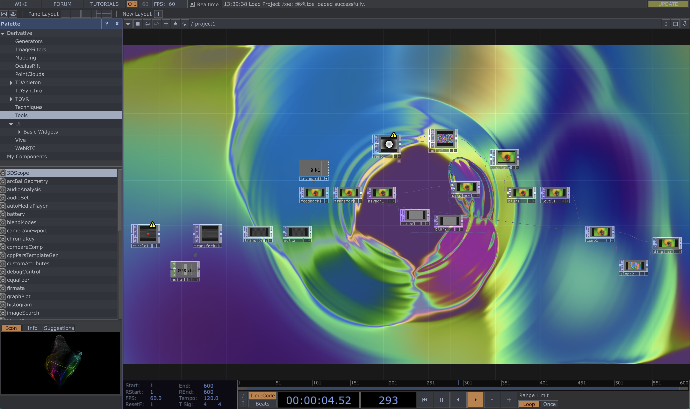

01
I used feedback, blur, transform, and noise in TouchDesigner to create a dynamic and fluid visual effect with continuous distortion.

02
Based on the work from 01, I added a mirror effect and modified the ramp.

03
Based on the work from 01, I added a mirror effect and modified the ramp.

04
Based on the work from 01, I added a mirror effect and modified the ramp.